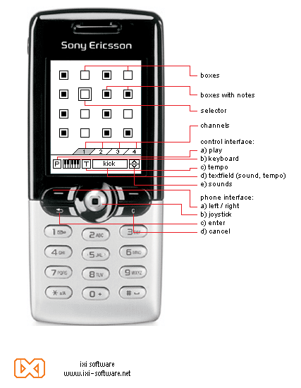

ixi
software

boxer - ixi mobile
phone application:
a sequencer for creating ringtones
Description:
The Boxer is a time sequencer for controlling the inbuilt MIDI sounds of the latest mobile phones. It allows the user to create ringtones that can be stored on the phone and sent to friends.
It is a 16 step, 4 track sequencer where sounds can be layered
on the four channels.
There are 2 operative modes: Play and Edit.
Instructions:
-[control interface]
Box: each of the boxes represent a holder for a chosen sound.
When the box is filled with a smaller black box, it containes a sound
from the soundlist and the pitch of that sound.
Selector: the selector is the controller
of the sequencer. It can be moved with the joystick of
the phone. When the selector is moved to a filled box, it plays the sound
of the box.
Channels: the channels are the 4 tracks of the sequencer.
Use the left/right buttons on the phone to navigate between
the channels.
P: Play and stop the composition.
Keyboard: Pitch controller of the MIDI sounds. When selected and the joystick is pressed down, a keyboard appears. One navigates the keyboard with the left/right buttons on the phone.
T: The tempo of the sequencer in BPM (Beats Per Minute). The tempo will appear in the textfield.
Sounds: Navigation of the MIDI sounds, inbuilt in the phone. The sound names will appear in the textfield.
- [Phone Interface]
Left/Right: In Play mode it controlles navigation between channels of the sequencer. In Edit mode, it controlles which of the Edit functions is active (Play, Keyboard, Tempo and Sounds). In Keyboard mode, it moves between keys on the keyboard.
Joystick: In Play mode it controlles navigation between the boxes of the sequencer. On press-down, it fills the box with sound. In Edit mode it has the following functions: Keyboard: One uses the joystick to navigate in the sequencer and fill the boxes with the chosen sound and pitch. Tempo: Up/Down = + and - 10 of the tempo. Left/Right = + and - 1 of the tempo. Sounds: Navigate between MIDI sounds.
Enter: Switch between Play and Edit modes.
Cancel: In Play mode it deletes a sound from a box. In Edit mode, it cancels the latest action and goes back to Play mode.